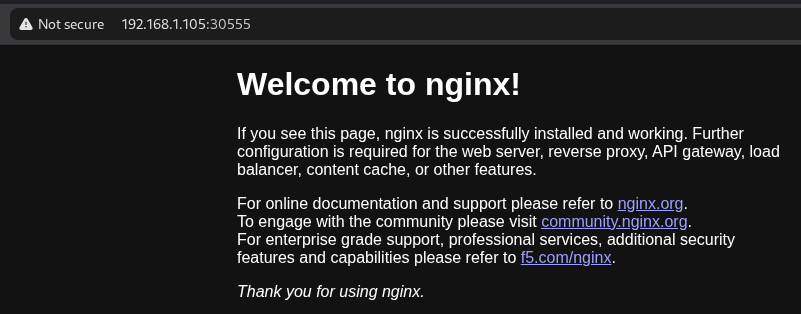

Following this. And this.
I don't want to use Ubuntu, I want Debian coz I'm awkward. The guide uses Ubuntu Cloud. Debian has a
cloud equivalent. Cloud versions include cloud-init which is a tool
used in VMs to allow
config at startup of the VM.
Memorise this.
Kubernetes jargon.
Create a template
$ wget https://cloud.debian.org/images/cloud/trixie/latest/debian-13-azure-amd64.tar.xz
$ tar -xvf debian-13-azure-amd64.tar.xz
$ mv disk.raw debian-13-azure-amd64.raw # To prevent mistakes
$ qm create 103 --name debian-cloud --memory 2048 --cores 2 --net0 virtio,bridge=vmbr0
$ qm list
$ qm importdisk 103 debian-13-azure-amd64.raw local-lvm # Import image as unused disk
$ qm set 103 --scsihw virtio-scsi-pci --scsi0 local-lvm:vm-103-disk-0 # Configure SCSI controller, use volume as a virtual SCSI hard disk
$ qm set 103 --ide2 local-lvm:cloudinit # Set volume as IDE hard disk
$ qm set 103 --boot c --bootdisk scsi0 # set boot order and specify disk
$ qm set 103 --serial0 socket --vga serial0 # Create serial device, configure VGA to use it
$ qm set 103 --agent enabled=1 # Commes with QEMU guest agent
$ qm set 103 --ciuser admin --cipassword [password] # Seriously? I just paste it into the terminal?
$ qm set 103 --ipconfig0 ip=dhcp
$ qm set 103 --onboot 1
$ qm resize 103 scsi0 20G # The Debian image is 30GB anyway so this won't go smaller
# shrinking disks is not supported
$ qm template 103
Spin up some Kubernetes nodes.
$ qm clone 103 104 --name k8s-ctrlpln --full
$ qm clone 103 105 --name k8s-worker1 --full
$ qm clone 103 106 --name k8s-worker2 --full
# Set static IPs
$ qm set 104 --ipconfig0 ip=192.168.1.104/24,gw=192.168.1.1
$ qm set 105 --ipconfig0 ip=192.168.1.105/24,gw=192.168.1.1
$ qm set 106 --ipconfig0 ip=192.168.1.106/24,gw=192.168.1.1
Do the stuff for the SSH. Keys for each:
$ ssh-keygen -t ed25519
Add these all to ~/.ssh/config, e.g.:
Host k8s-ctrlpln
User admin
Hostname 192.168.1.104
ProxyJump bastion
IdentityFile ~/.ssh/k8s-ctrlpln
Start and log in to each VM and add public key, e.g.:
$ qm start 105
$ qm terminal 105 # Log in as admin
$ echo "ssh-ed25519 XXX damo@thinkpad"
And sure while you're in there, update the root password with sudo passwd root.
Install K3s
Install on the control plane node. Do the installations as root. Otherwise you'll get permissions errors trying to install Flannel.
$ curl -sfL https://get.k3s.io | sh -
Show the token and config.
$ cat /var/lib/rancher/k3s/server/node-token
$ cat /etc/rancher/k3s/k3s.yaml
Install on the worker nodes and give them the token and the IP of the control plane.
$ curl -sfL https://get.k3s.io | K3S_URL=https://192.168.1.104:6443 K3S_TOKEN=[TOKEN] sh -
Check they're up and talking. From the control plane run this.
$ kubectl get nodes
NAME STATUS ROLES AGE VERSION
k8s-ctrlpln Ready control-plane 3h27m v1.36.4+k3s1
k8s-worker1 Ready <none> 88s v1.36.4+k3s1
k8s-worker2 Ready <none> 49s v1.36.4+k3s1
Install Flannel plugin. It's for networking between containers - creating network interfaces, subnets, IP management
$ kubectl apply -f https://github.com/flannel-io/flannel/releases/latest/download/kube-flannel.yml
Deploy an application
Let's deploy nginx coz that's what's in the Baeldung guide (second link at the top).
$ kubectl create deployment nginx --image=nginx --port=80 --replicas=3
That should spin up pods.
$ kubectl get pods
NAME READY STATUS RESTARTS AGE
nginx-5cf8dc6bc5-gp7sb 1/1 Running 0 23s
nginx-5cf8dc6bc5-hqqwh 1/1 Running 0 23s
nginx-5cf8dc6bc5-nzwgk 1/1 Running 0 23s
Three of them, like it was told. They've got “nginx” in the name so I suppose that means they're running nginx.
Service / Ingress / CNI
Service
- Pods are up, down, moving between nodes
- Service keeps track - send to service not individual pods
- Can act as a load balancer
Ingress
- Routes traffic to services
- Can set rules - URL paths go to different services
- Kind of like an API gateway
CNI
- Assigns IPs to pods from cluster CIDR
- Operates across nodes
- Rule: every pod can reach every other pod directly
Service
A service is sort of like an API that provides an abstraction layer for the pods in an application.
$ kubectl create service clusterip nginx --tcp=80:80
service/nginx created
$ kubectl describe service nginx
Name: nginx
Namespace: default
Labels: app=nginx
Annotations: <none>
Selector: app=nginx
Type: ClusterIP
IP Family Policy: SingleStack
IP Families: IPv4
IP: 10.43.115.24
IPs: 10.43.115.24
Port: 80-80 80/TCP
TargetPort: 80/TCP
Endpoints: 10.42.2.3:80,10.42.1.3:80,10.42.0.9:80
Session Affinity: None
Internal Traffic Policy: Cluster
Events: <none>
Ingress (Traefik)
Create a yaml on the control plan node. Again, this is from the Baeldung guide.
apiVersion: networking.k8s.io/v1
kind: Ingress
metadata:
name: nginx
annotations:
ingress.kubernetes.io/ssl-redirect: "false"
spec:
rules:
- http:
paths:
- path: /
pathType: Prefix
backend:
service:
name: nginx
port:
number: 80
That configures the ingress. Now start it.
$ kubectl apply -f traefik.yaml
ingress.networking.k8s.io/nginx created
Check the configuration that's actually running. This should match the Traefik config and the setup of the nodes.
$ kubectl describe ingress nginx
Testing
Service has an IP assigned to the cluster from a virtual subnet defined for the cluster. This was assigned when the service was created above.
$ kubectl get svc nginx
NAME TYPE CLUSTER-IP EXTERNAL-IP PORT(S) AGE
nginx ClusterIP 10.43.115.24 <none> 80/TCP 8d
The service type is ClusterIP meaning it's only accessible from within the cluster. This is the default type. To access it externally (coz it's nginx) it needs to be type NodePort. Read this. So we change the definition of the service. Read this.
$ kubectl describe services nginx | grep Type
Type: ClusterIP
$ kubectl patch service nginx \ # Change the service
--type='merge' \ # How the change is to be done. That's a whole rabbit hole.
-p '{"spec":{"type":"NodePort"}}' # The change to be made, in JSON format
service/nginx patched
$ kubectl describe services nginx | grep Type
Type: NodePort
To access the nginx server query this port on the IP of any of the nodes. So if there are multiple workers you can query the IP of any of them, at the relevant port and it will be redirected behind the scenes to a pod that can be on any node in the cluster. Also we'll need to open the port in the firewall of each node. Which port?
$ kubectl get svc nginx
NAME TYPE CLUSTER-IP EXTERNAL-IP PORT(S) AGE
nginx NodePort 10.43.115.24 <none> 80:30555/TCP 8d
Port 30555.
Having a look at iptables first I can see this rule:
$ iptables -L
Chain INPUT (policy ACCEPT)
target prot opt source destination
...
ACCEPT all -- anywhere anywhere
...
That means it's already accepting traffic. That means…

Success!